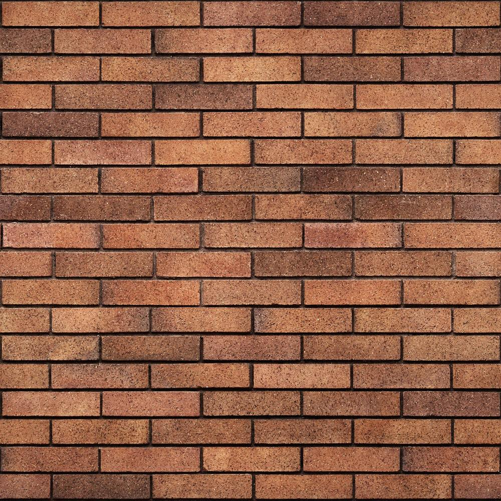

 元素浮动布局之后，会脱离原有的文档流，使用新的浮动文档流进行布局。在浮动文档流中块元素和行元素一样，不独占一行，按照浮动方向进行左右排列，且宽度也不再自动和父元素等宽。元素浮动布局之后，会脱离原有的文档流，使用新的浮动文档流进行布局。在浮动文档流中块元素和行元素一样，不独占一行，按照浮动方向进行左右排列，且宽度也不再自动和父元素等宽。元素浮动布局之后，会脱离原有的文档流，使用新的浮动文档流进行布局。在浮动文档流中块元素和行元素一样，不独占一行，按照浮动方向进行左右排列，且宽度也不再自动和父元素等宽。元素浮动布局之后，会脱离原有的文档流，使用新的浮动文档流进行布局。在浮动文档流中块元素和行元素一样，不独占一行，按照浮动方向进行左右排列，且宽度也不再自动和父元素等宽。元素浮动布局之后，会脱离原有的文档流，使用新的浮动文档流进行布局。在浮动文档流中块元素和行元素一样，不独占一行，按照浮动方向进行左右排列，且宽度也不再自动和父元素等宽。元素浮动布局之后，会脱离原有的文档流，使用新的浮动文档流进行布局。在浮动文档流中块元素和行元素一样，不独占一行，按照浮动方向进行左右排列，且宽度也不再自动和父元素等宽。元素浮动布局之后，会脱离原有的文档流，使用新的浮动文档流进行布局。在浮动文档流中块元素和行元素一样，不独占一行，按照浮动方向进行左右排列，且宽度也不再自动和父元素等宽。元素浮动布局之后，会脱离原有的文档流，使用新的浮动文档流进行布局。在浮动文档流中块元素和行元素一样，不独占一行，按照浮动方向进行左右排列，且宽度也不再自动和父元素等宽。元素浮动布局之后，会脱离原有的文档流，使用新的浮动文档流进行布局。在浮动文档流中块元素和行元素一样，不独占一行，按照浮动方向进行左右排列，且宽度也不再自动和父元素等宽。元素浮动布局之后，会脱离原有的文档流，使用新的浮动文档流进行布局。在浮动文档流中块元素和行元素一样，不独占一行，按照浮动方向进行左右排列，且宽度也不再自动和父元素等宽。元素浮动布局之后，会脱离原有的文档流，使用新的浮动文档流进行布局。在浮动文档流中块元素和行元素一样，不独占一行，按照浮动方向进行左右排列，且宽度也不再自动和父元素等宽。元素浮动布局之后，会脱离原有的文档流，使用新的浮动文档流进行布局。在浮动文档流中块元素和行元素一样，不独占一行，按照浮动方向进行左右排列，且宽度也不再自动和父元素等宽。元素浮动布局之后，会脱离原有的文档流，使用新的浮动文档流进行布局。在浮动文档流中块元素和行元素一样，不独占一行，按照浮动方向进行左右排列，且宽度也不再自动和父元素等宽。元素浮动布局之后，会脱离原有的文档流，使用新的浮动文档流进行布局。在浮动文档流中块元素和行元素一样，不独占一行，按照浮动方向进行左右排列，且宽度也不再自动和父元素等宽。